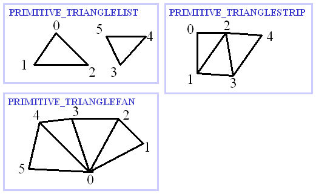

関数リファレンスだけでは説明不足になるので、ここでObjEffectの解説をします。
| Sample.EA | 解説 |
| EA01 | 頂点の意味 |
| EA02 | プリミティブ |
| EA03 | 頂点の座標 |
| EA04 | 頂点のUV値 |
| Sample.EB | エフェクトサンプル |
| EB01 | 四角形画像を描画 |
| Sample.EC | エフェクトサンプル(応用) |
| EC01 | 四重結界(もどき) |
| EA01 頂点の意味 |
|
東方弾幕風は2Dゲームですが、描画には3Dグラフィクスの機能を用いています。 3Dといえば、よくテクスチャとかポリゴンとか聞くと思います。 テクスチャとは画像です。絵です。 ポリゴンとは3Dグラフィクスで物体をあらわすのに用いる多角形のことです。 ポリゴンを表すのに用いられるのが頂点です 例えば、三角形を表すには、3つの頂点が必要です。 (3つの点を結べば三角形になりますよね) ポリゴンはほとんどが三角形の集合で表されます。 三角形は凸な角だけで構成されたりして都合がよいのです。 さて、弾幕風の自機の画像も、弾の画像も 画像ファイルから読み込んだテクスチャの一部を 四角形に切り取って画面に貼り付けているのは、 見ただけで分かると思います。 その四角形もポリゴンなのです。 四角形のポリゴンにテクスチャを貼り付けて、 絵を表示しているのです。 |
| EA02 プリミティブ |
|
ポリゴンは三角形の集合で表されます。 しかしながら、どのような頂点の並びでどのような三角形の集合を あらわすのか決めないと困ってしまいます。 頂点の並びで定義される図形を決めてやらないといけません。 この頂点の並びで定義される図形をプリミティブといいます。 このプリミティブには三種類が用意されています。  例えば四角形を表すには、TRIANGLELISTでは6つの頂点が必要になりますが、 TRAIANGLESTRIPやTRAIANGLEFANでは4つの頂点で表すことができます。 それでは、よくSTGにでてくる曲がるレーザーにはどれが使いやすいでしょうか。 曲がるレーザーにはTRAIANGLESTRIPが使いやすいですよね。 TRAIANGLESTRIPは、最初の頂点からはしご上に連結した形状を表すので 曲がるレーザーのように、途中が曲がったものには最適なのです。 もちろん、TRAIANGLELISTは、ある意味どんな図形でも表現できるので 当然曲がるレーザーを表現することもできますが、 頂点の数が多くなるので面倒なのです。 |
| EA03 頂点の座標 |
|
頂点には座標があります。 ただし、この座標は、移動、回転、拡大前の座標であることに注意しないといけません。 描画する頂点は、Obj_SetPosisionで設定した、x,y座標や、 ObjEffect_SetAngleでの角度、ObjEffect_SetScaleでの拡大率によって 描画先が移動します。 頂点の移動は、拡大→回転→移動の順で行っています。 例えば、↓の図の a と b は、同じ大きさの四角形になるように頂点の座標を配置していますが、 回転の中心や、描画先の場所が異なります。 |
| EA04 頂点のUV値 |
|
UV値はテクスチャ画像における座標をあらわします。 本来は、0-1の値をとります(まあ0-1以外の値をとることもできますが)が、 弾幕風では、画像のx座標がuにy座標がvにそのまま対応します。 ポリゴンを描画するときに、各頂点のUV値をもとにポリゴン上の1点1点が テクスチャ上のどの位置を参照しているのかを求めています。 まあ、大雑把にまとめると 画像の切り抜き部分を指定するのがUV値です。 頂点の座標とUV値は異なったものなので、画像を歪めて表示したりもできます。 |
| EB01 四角形画像を描画 | |
|
| EC01 四重結界(もどき) | |
|
四重結界に似せたエフェクトです。 こんなエフェクトになると、矩形画像だけでは処理しきれないので、 3Dグラフィクスの機能が必要になってきます。 四重結界では、エフェクトの最終段階では四角形(結界)が4つあります。 この四角形は、四角形の画像をそのまま4つ貼り付けているわけではありません。 四角形の画像をそのまま貼り付けると、 結界のラインが動いているエフェクトを表すことはできません。 ポリゴンで四角形の辺を形作っています。 このサンプルでは八角形→四角形のみですが 本当の四重結界は、 ほとんど円(16角形くらい?)→八角形→六角形→四角形と変化していきます。 ↑YukariSpell.pngの画像 |
|
|